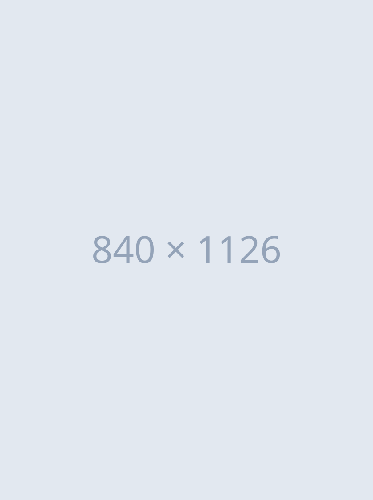
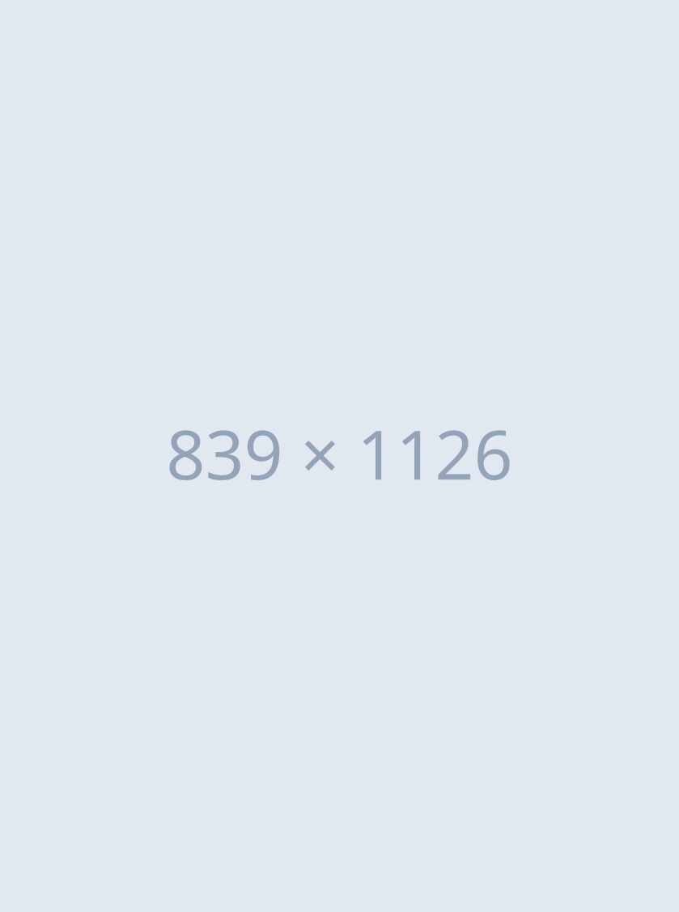

The Autumn Chapter October to December
What the farms sent us this week.
The nine-course tasting in the dining room, à la carte in the front room and snacks at the bar. The menu turns four times a year.
The Dining Room · The Chef's Counter
The Seasonal Tasting, nine courses.
About three hours, from the bread to the madeleines. A vegetarian tasting is cooked on request, 48 hours ahead.


The Evening
How a night at the table runs.
- I
A glass at the bar
Come ten minutes early. The bar pours a small glass of something cold while your table is set.
- II
Bread, then the season
Rye from Ferro Mill and the butter we culture ourselves, then the vegetables, the sea and the farm.
- III
Wine, or not
Owen pours a glass for each course, or a non-alcoholic pairing of shrubs, teas and verjus.
- IV
Madeleines to finish
Warm from Clara's oven with coffee or tea. We pack the leftovers for the morning.
The Front Room · Every Night
À la carte, by the fire.
The tasting's dishes in larger plates, and a few that only the front room cooks. Book a front-room table or take a seat at the bar.




The Bar · From 5 pm · Walk-ins
No booking, just a stool.
Fourteen seats kept for walk-ins every night. Snacks, half-bottles and the cocktails Owen writes each season.
Four Chapters a Year
The menu turns with the farms.
- January – March
Winter
Citrus, chicories, Dungeness crab at its best, slow braises over the fire.
- April – June
Spring
Peas, asparagus, the first halibut, strawberries from Pell Ridge.
- July – September
Summer
Tomatoes, stone fruit, rockfish and corn grilled in the husk.
- October – December · Now
Autumn
Leeks from the coals, wild mushrooms, duck, quince and chestnuts.
Allergies, vegetarian, pescatarian, no gluten or no dairy: tell us 48 hours ahead and we cook the whole menu around it. A few dishes can change on the night with the catch.
Reserve a Table